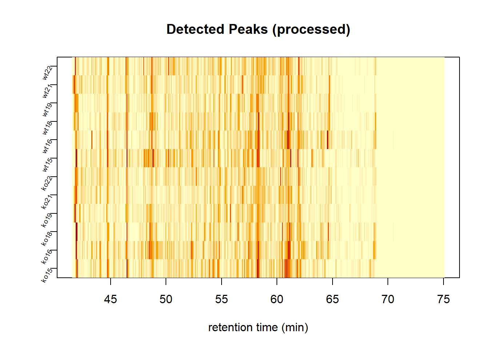

Introduction to AlpsLCMS
Institute for Bioengineering of Catalonia
2020-11-17
Source:vignettes/introduction-to-alpslcms.Rmd
introduction-to-alpslcms.RmdThe AlpsLCMS package was written with two purposes in mind:
- to help data analysts and LC-MS scientists to work with LC-MS samples.
- to help IT pipeline builders implement automated methods for preprocessing.
Functions from this package written for data analysts and LC-MS scientists are prefixed with lcms_, while higher level functions written for IT pipeline builders are prefixed with pipe_. The main reason why all exported functions have a prefix is to make it easy for the user to discover the functions from the package. By typing lcms_ RStudio will return the list of exported functions. In the R terminal, lcms_ followed by the tab key (⇥) twice will have the same effect. Other popular packages, follow similar approaches (e.g: forcats: fct_*, stringr: str_*).
This vignette is written for the first group. It assumes some prior basic knowledge of LC-MS and data analysis, as well as some basic R programming. In case you are interested in building pipelines with this package, you may want to open the file saved in this directory (run it on your computer):
pipeline_example <- system.file("pipeline-rmd", "pipeline_example.R", package = "AlpsLCMS")
print(pipeline_example)library(AlpsLCMS)NODE 1: Data wrangling
Convert RAW to mzXML
First, we need the listed spectra in “.mzXML” format to create the lcms_dataset. We can manually convert “.raw” into “.mzXML” using RawConverter or ProteoWizard externally and saved them within the same input directory. We set the polarity manually.
Input
library(faahKO)
path <- dir(system.file("cdf", package = "faahKO"), full.names = TRUE,
recursive = TRUE)
polarity <- 1 # 1 for positive mode, 0 for negative modeCode to run
# Be careful setting the mode to "onDisk" when you apply this function.
dataset <- lcms_read_samples(path, mode = "onDisk")
#> Polarity can not be extracted from netCDF files, please set manually the polarity with the 'polarity' method.
dataset@featureData@data[["polarity"]] <- rep(polarity, length(dataset@featureData@data[["polarity"]]))
head(dataset)
#> MSn experiment data ("OnDiskMSnExp")
#> Object size in memory: 0.03 Mb
#> - - - Spectra data - - -
#> MS level(s): 1
#> Number of spectra: 6
#> MSn retention times: 41:41 - 41:49 minutes
#> - - - Processing information - - -
#> Data loaded [Tue Nov 17 19:36:01 2020]
#> MSnbase version: 2.10.1
#> - - - Meta data - - -
#> phenoData
#> rowNames: ko15.CDF
#> varLabels: sampleNames
#> varMetadata: labelDescription
#> Loaded from:
#> ko15.CDF
#> protocolData: none
#> featureData
#> featureNames: F01.S0001 F01.S0002 ... F01.S0006 (6 total)
#> fvarLabels: fileIdx spIdx ... spectrum (31 total)
#> fvarMetadata: labelDescription
#> experimentData: use 'experimentData(object)'NODE 2: Append metadata
To merge the metadata, an Excel o CSV file is required, containing the first column (called “sampleNames”) with the same name of the LC-MS files, ending with the format (e.g. Sample1.mzXML).
It requires a column (called “treatment”) with the class sample. Ensure you have this specific colname “treatment”.
Caution with metadata. The use of characters such as “-”, “/”, " " (space) and starting with numbers, etc. leads to problems. Therefore, the function replace [\\\"\\s/\\\\,;.:|#@$%&?!*%+-=><^'(){}\\[\\]]+ by _. Beware of using other special characters and change them by usual ASCII characters.
Input parameters
metadata <- data.frame(sampleNames = basename(path),
treatment = c(rep("ko",6),
rep("wt",6)),
stringsAsFactors = FALSE)Code to run
dataset <- lcms_meta_add(dataset, metadata, by = "sampleNames")
phData(dataset)
#> sampleNames treatment
#> 1 ko15.CDF ko
#> 2 ko16.CDF ko
#> 3 ko18.CDF ko
#> 4 ko19.CDF ko
#> 5 ko21.CDF ko
#> 6 ko22.CDF ko
#> 7 wt15.CDF wt
#> 8 wt16.CDF wt
#> 9 wt18.CDF wt
#> 10 wt19.CDF wt
#> 11 wt21.CDF wt
#> 12 wt22.CDF wtNODE 3: Total ion chromatogram
tics <- lcms_tics(dataset, treatment = "treatment")
lcms_plot_tics(tics,
treatment = treatment,
plot_type = "spec")
#> Warning: Removed 144 row(s) containing missing values (geom_path).
lcms_plot_tics(tics, treatment = treatment,
plot_type = "boxplot")NODE 4: Filtering
Filter by retention time / m/z
For coherence with the pipeline, time is measured in minutes. XCMS and IPO packages work in seconds by default, while CAMERA and MAIT in minutes. Under the hood, the still do in this way, but we preset all our results in minutes.
Code to run
dataset_shorter <- lcms_filter_rt_min(dataset, rt = rt)
dataset_shorter <- lcms_filter_mz(dataset_shorter, mz = ms)
tics <- lcms_tics(dataset_shorter, treatment = "treatment")
lcms_plot_tics(tics,
treatment = treatment,
plot_type = "spec")
NODE 5: Optimization of parameters: IPO
We perform parameter optimization on the XCMS preprocessing algorithms using the IPO Package. This includes Peak Detection (‘Centwave’ and ‘Matched Filter’), Retention Time Correction (‘obiwarp’) and Peak Correspondence (‘Density’). Optimization can be done using all the regular samples(exhaustive), or just a subset. Also you can use Quality Control samples for optimization. Finally, you can skip the optimization process and use the default set of parameter provided by the IPO Package.
Optimization of Peak Detection parameters
Code to run (matchedFilter)
default_peakPar <- IPO::getDefaultXcmsSetStartingParams('matchedFilter')Peak detection (matched filter)
mfp <- xcms::MatchedFilterParam(
mzdiff = default_peakPar$mzdiff,
snthresh = 3
)
peakdet <- xcms::findChromPeaks(dataset, param = mfp)Retention Time Correction and Peak Correspondence
Peak correspondence is carried out by the ‘groupPeaks’ method, with parameters obtained form IPO. Peak Correspondence consist in grouping peaks on retention time axis with the purpose of associate them to spectra on the mass/charge axis. After this stage we finally have a peak table.
It requires a previous grouping.
Correspondence
new_params <- PeakDensityPar(sampleGroups = classes,
binSize = 0.6)
peakgrouped <- groupPeaks(peakdet,
param = new_params)
#> Processing 1334 mz slices ... OKmessage("Number of detected peaks")
#> Number of detected peaks
peakdet@msFeatureData[["chromPeakData"]]@nrows
#> [1] 24414Alignment and regrouping
pgp <- PeakGroupsPar(minFraction = 0.8,
extraPeaks = 1,
smooth = "loess",
span = 0.4,
family = "gaussian")
## Get the peak groups that would be used for alignment.
xdata_aling <- adjustRT(peakgrouped, param = pgp)
#> Performing retention time correction using 208 peak groups.
#> Applying retention time adjustment to the identified chromatographic peaks ... OK
rt_plot = lcms_retention_time_alignment_plot(xdata_aling)
rt_plot
#> Warning: Removed 144 row(s) containing missing values (geom_path).
## REGROUPING
new_params <- PeakDensityPar(sampleGroups = classes,
bw = 30,
minFraction = 0.4)
peakgrouped = groupPeaks(xdata_aling, param = new_params)
#> Processing 3201 mz slices ... OKImage plot of the chromatographic detected peaks per sample before retention time alignment and grouping:
lcms_plot_chrom_peak_image(peakdet, binSize = 5,
xlim = NULL,
log = FALSE,
xlab = "retention time (min)",
yaxt = par("yaxt"),
main = "Detected Peaks (unprocessed)")
lcms_plot_chrom_peak_image(peakgrouped, binSize = 5,
xlim = NULL,
log = FALSE,
xlab = "retention time (min)",
yaxt = par("yaxt"),
main = "Detected Peaks (processed)")
Imputation
Finally, in the imputation stage, we integrate the areas of the missing peaks of the peak table that were not detected in the previous steps of the signal preprocessing workflow. This stage is important to make easier statistical and machine learnig posterior stages.
message("Missing values found in the processed dataset: ", sum(is.na(featureValues(peakgrouped))))
#> Missing values found in the processed dataset: 7290
peakgrouped_imp <- lcms_fill_chrom_peaks(peakgrouped)
#>
#> Imputing missing peaks of the peak table.
cat("Imputing values...\n")
#> Imputing values...
message("Missing values found after fill_chrom_peaks: ", sum(is.na(featureValues(peakgrouped_imp))))
#> Missing values found after fill_chrom_peaks: 892NODE 8: Feature table
The function feature_values creates a intensity matrix with all the features. However, since this is untargeted metabolomics, the colnames are composed by FT1, FT2, FT3… (FT = feature) and each feature needs to be explored with the feature definition function (info for mass and rt) once a feature is significantly different by groups.
Merging into a Feature Table
xdata = feature_values(peakgrouped_imp,
method = "maxint",
value = "into",
filled = TRUE,
missing = "rowmin_half")
xdata <- t(xdata)
feature <- featureDefinitions(peakgrouped_imp)
feature <- feature@listData
featNames <- paste0(feature$mzmed,"_",feature$rtmed)
colnames(xdata) <- featNames
message("Missing values in the feature table: ",
sum(is.na(xdata)))
#> Missing values in the feature table: 0NODE 9: Data reduction
Input
st <- getRamSt(peakgrouped_imp)
sr <- 0.6
#List of adducts for do.findmain
#adducts_list = c("[M+H-H2O]+")
adducts_list = c()
## Building the defineExperiment manually
## Change for your convenience (e.g. GC-MS)
value <- c(rep("fill", 4), "LC-MS")
design <- as.data.frame(value)
rownme <- c("Experiment", "Species", "Sample",
"Contributer", "platform")
rownames(design) <- rownme
value <- c(rep("fill", 13), "1")
instrument <- as.data.frame(value)
rownm <- c("chrominst", "msinst", "column",
"solvA", "solvB", "CE1", "CE2",
"mstype", "msmode", "ionization",
"colgas", "msscanrange", "conevol",
"MSlevs")
rownames(instrument) <- rownm
Experiment <- list(design = design, instrument = instrument)Code to run
RC <- clustering(xcmsObj = peakgrouped_imp,
featdelim = ".",
st = st,
sr = sr,
ExpDes = Experiment,
normalize = "TIC",
deepSplit = TRUE,
sampNameCol = 1,
mspout = FALSE,
fftempdir = getwd())
#> organizing dataset
#> normalizing dataset
#> calculating ramclustR similarity: nblocks = 1
#> 1
#> RAMClust feature similarity matrix calculated and stored:
#> RAMClust distances converted to distance object
#> fastcluster based clustering complete
#> dynamicTreeCut based pruning complete
#> RAMClust has condensed 1844 features into 421 spectra
#> collapsing feature into spectral signal intensities
RC <- do_findmain(RC,
nls = c("[M+H-H2O]+"),
mode = "positive",
mzabs.error = 0.01,
ppm.error = 10,
plot.findmain = FALSE,
writeMat = FALSE,
writeMS = FALSE)
#> 10 of 421
#> 20 of 421
#> 30 of 421
#> 40 of 421
#> 50 of 421
#> 60 of 421
#> 70 of 421
#> 80 of 421
#> 90 of 421
#> 100 of 421
#> 110 of 421
#> 120 of 421
#> 130 of 421
#> 140 of 421
#> 150 of 421
#> 160 of 421
#> 170 of 421
#> 180 of 421
#> 190 of 421
#> 200 of 421
#> 210 of 421
#> 220 of 421
#> 230 of 421
#> 240 of 421
#> 250 of 421
#> 260 of 421
#> 270 of 421
#> 280 of 421
#> 290 of 421
#> 300 of 421
#> 310 of 421
#> 320 of 421
#> 330 of 421
#> 340 of 421
#> 350 of 421
#> 360 of 421
#> 370 of 421
#> 380 of 421
#> 390 of 421
#> 400 of 421
#> 410 of 421
#> 420 of 421
#> finishedlabeled_adducts <- labelling(RC)
representative_ions <- labeled_adducts$representative_ions
xdata_reduced <- feature_reduction(xdata, representative_ions, RC)
#> A number of 260 features correspond to singletons
#> Original dataset has 1844 features
#> Cluster representative ions dataset has 21 features
#> Singletons dataset has 1774 features
#> Reduced dataset has 1795 features
dim(xdata)
#> [1] 12 1844
dim(xdata_reduced)
#> [1] 12 1795Univariante analysis
stat <- function(x){stats::wilcox.test(x ~ classes, xdata_reduced)$p.value}
abcd <- data.frame(apply(FUN = stat,
MARGIN = 2,
X = xdata_reduced))
#> Warning in wilcox.test.default(x = c(ko15.CDF = 135550.792944444, ko16.CDF =
#> 176082.854055555, : cannot compute exact p-value with ties
#> Warning in wilcox.test.default(x = c(ko15.CDF = 26850.705, ko16.CDF =
#> 32251.8727058821, : cannot compute exact p-value with ties
#> Warning in wilcox.test.default(x = c(ko15.CDF = 6396.25791834673, ko16.CDF =
#> 18189.3492777777, : cannot compute exact p-value with ties
#> Warning in wilcox.test.default(x = c(ko15.CDF = 290.407971668821, ko16.CDF =
#> 290.407971668821, : cannot compute exact p-value with ties
#> Warning in wilcox.test.default(x = c(ko15.CDF = 1619.4521026721, ko16.CDF =
#> 8155.45572481316, : cannot compute exact p-value with ties
#> Warning in wilcox.test.default(x = c(ko15.CDF = 11643.1039999999, ko16.CDF =
#> 9605.4585, : cannot compute exact p-value with ties
#> Warning in wilcox.test.default(x = c(ko15.CDF = 2441.9697287185, ko16.CDF =
#> 23298.1550000001, : cannot compute exact p-value with ties
#> Warning in wilcox.test.default(x = c(ko15.CDF = 4867.52311193373, ko16.CDF =
#> 4867.52311193373, : cannot compute exact p-value with ties
#> Warning in wilcox.test.default(x = c(ko15.CDF = 2607.9519225388, ko16.CDF =
#> 2607.9519225388, : cannot compute exact p-value with ties
#> Warning in wilcox.test.default(x = c(ko15.CDF = 652.577078736423, ko16.CDF =
#> 18319.1583749998, : cannot compute exact p-value with ties
#> Warning in wilcox.test.default(x = c(ko15.CDF = 7031.21902900233, ko16.CDF =
#> 548.249371341853, : cannot compute exact p-value with ties
#> Warning in wilcox.test.default(x = c(ko15.CDF = 1941.99980174865, ko16.CDF =
#> 1322.28444689658, : cannot compute exact p-value with ties
#> Warning in wilcox.test.default(x = c(ko15.CDF = 13062.4587857143, ko16.CDF =
#> 34594.3249999998, : cannot compute exact p-value with ties
#> Warning in wilcox.test.default(x = c(ko15.CDF = 6833.55759032838, ko16.CDF =
#> 2380.42447835696, : cannot compute exact p-value with ties
#> Warning in wilcox.test.default(x = c(ko15.CDF = 519.960713010862, ko16.CDF =
#> 519.960713010862, : cannot compute exact p-value with ties
#> Warning in wilcox.test.default(x = c(ko15.CDF = 18600.8471249998, ko16.CDF =
#> 15124.9195833333, : cannot compute exact p-value with ties
#> Warning in wilcox.test.default(x = c(ko15.CDF = 3424.07606363403, ko16.CDF =
#> 30093.7481250003, : cannot compute exact p-value with ties
#> Warning in wilcox.test.default(x = c(ko15.CDF = 2520.25988679936, ko16.CDF =
#> 16331.6877500001, : cannot compute exact p-value with ties
#> Warning in wilcox.test.default(x = c(ko15.CDF = 14987.4064375001, ko16.CDF =
#> 4359.50409769443, : cannot compute exact p-value with ties
#> Warning in wilcox.test.default(x = c(ko15.CDF = 1198.3675573705, ko16.CDF =
#> 2772.57658808477, : cannot compute exact p-value with ties
#> Warning in wilcox.test.default(x = c(ko15.CDF = 11682.2273333332, ko16.CDF =
#> 1045.83820065674, : cannot compute exact p-value with ties
#> Warning in wilcox.test.default(x = c(ko15.CDF = 595.642142777734, ko16.CDF =
#> 25913.8609411767, : cannot compute exact p-value with ties
#> Warning in wilcox.test.default(x = c(ko15.CDF = 4329.10631218467, ko16.CDF =
#> 1164.14775003789, : cannot compute exact p-value with ties
#> Warning in wilcox.test.default(x = c(ko15.CDF = 807.121088640709, ko16.CDF =
#> 12283.2718947368, : cannot compute exact p-value with ties
#> Warning in wilcox.test.default(x = c(ko15.CDF = 1794.27515464487, ko16.CDF =
#> 1794.27515464487, : cannot compute exact p-value with ties
#> Warning in wilcox.test.default(x = c(ko15.CDF = 1684.33819186121, ko16.CDF =
#> 842.169095930605, : cannot compute exact p-value with ties
#> Warning in wilcox.test.default(x = c(ko15.CDF = 18165.7131774229, ko16.CDF =
#> 32594.0178346635, : cannot compute exact p-value with ties
#> Warning in wilcox.test.default(x = c(ko15.CDF = 14028.2018153773, ko16.CDF =
#> 38984.1499999999, : cannot compute exact p-value with ties
#> Warning in wilcox.test.default(x = c(ko15.CDF = 14745.43, ko16.CDF =
#> 60087.9947272721, : cannot compute exact p-value with ties
#> Warning in wilcox.test.default(x = c(ko15.CDF = 7794.61961903012, ko16.CDF =
#> 32938.8818823527, : cannot compute exact p-value with ties
#> Warning in wilcox.test.default(x = c(ko15.CDF = 41530.9493076926, ko16.CDF =
#> 11521.53, : cannot compute exact p-value with ties
#> Warning in wilcox.test.default(x = c(ko15.CDF = 9433.84203625081, ko16.CDF =
#> 4716.9210181254, : cannot compute exact p-value with ties
#> Warning in wilcox.test.default(x = c(ko15.CDF = 71408.2658823524, ko16.CDF =
#> 12274.4093796262, : cannot compute exact p-value with ties
#> Warning in wilcox.test.default(x = c(ko15.CDF = 2795.28850307525, ko16.CDF =
#> 20856.2219200001, : cannot compute exact p-value with ties
#> Warning in wilcox.test.default(x = c(ko15.CDF = 8669.73066666656, ko16.CDF =
#> 6901.35600000005, : cannot compute exact p-value with ties
#> Warning in wilcox.test.default(x = c(ko15.CDF = 40471.0282777779, ko16.CDF =
#> 8471.34499999999, : cannot compute exact p-value with ties
#> Warning in wilcox.test.default(x = c(ko15.CDF = 27972.8099999999, ko16.CDF =
#> 12140.7528000001, : cannot compute exact p-value with ties
#> Warning in wilcox.test.default(x = c(ko15.CDF = 108526.317714286, ko16.CDF =
#> 59156.764952381, : cannot compute exact p-value with ties
#> Warning in wilcox.test.default(x = c(ko15.CDF = 8979.58746666673, ko16.CDF =
#> 15713.5374375001, : cannot compute exact p-value with ties
#> Warning in wilcox.test.default(x = c(ko15.CDF = 3453.37354000422, ko16.CDF =
#> 34317.6667222221, : cannot compute exact p-value with ties
#> Warning in wilcox.test.default(x = c(ko15.CDF = 44105.1696521741, ko16.CDF =
#> 6556.28819999992, : cannot compute exact p-value with ties
#> Warning in wilcox.test.default(x = c(ko15.CDF = 2249.38176641668, ko16.CDF =
#> 34622.4949999997, : cannot compute exact p-value with ties
#> Warning in wilcox.test.default(x = c(ko15.CDF = 29996.792470588, ko16.CDF =
#> 40361.4821666665, : cannot compute exact p-value with ties
#> Warning in wilcox.test.default(x = c(ko15.CDF = 7819.23005439546, ko16.CDF =
#> 116457.123368421, : cannot compute exact p-value with ties
#> Warning in wilcox.test.default(x = c(ko15.CDF = 9216.46025553968, ko16.CDF =
#> 2039.96794620888, : cannot compute exact p-value with ties
#> Warning in wilcox.test.default(x = c(ko15.CDF = 1844.34388336657, ko16.CDF =
#> 30093.8188235297, : cannot compute exact p-value with ties
#> Warning in wilcox.test.default(x = c(ko15.CDF = 132012.399998385, ko16.CDF =
#> 173026.840842107, : cannot compute exact p-value with ties
#> Warning in wilcox.test.default(x = c(ko15.CDF = 26745.85, ko16.CDF =
#> 466.861045369194, : cannot compute exact p-value with ties
#> Warning in wilcox.test.default(x = c(ko15.CDF = 4550.83824999996, ko16.CDF =
#> 3555646.9272381, : cannot compute exact p-value with ties
#> Warning in wilcox.test.default(x = c(ko15.CDF = 14864.3690340746, ko16.CDF =
#> 3135916.92672002, : cannot compute exact p-value with ties
#> Warning in wilcox.test.default(x = c(ko15.CDF = 785.800397056956, ko16.CDF =
#> 2721897.57913045, : cannot compute exact p-value with ties
#> Warning in wilcox.test.default(x = c(ko15.CDF = 855.916247865415, ko16.CDF =
#> 1907483.89366668, : cannot compute exact p-value with ties
#> Warning in wilcox.test.default(x = c(ko15.CDF = 2948.25294296063, ko16.CDF =
#> 616250.857458337, : cannot compute exact p-value with ties
#> Warning in wilcox.test.default(x = c(ko15.CDF = 63048.8887272729, ko16.CDF =
#> 315778.226666669, : cannot compute exact p-value with ties
#> Warning in wilcox.test.default(x = c(ko15.CDF = 93505.6052631577, ko16.CDF =
#> 148844.752041667, : cannot compute exact p-value with ties
#> Warning in wilcox.test.default(x = c(ko15.CDF = 2597.31601502472, ko16.CDF =
#> 2597.31601502472, : cannot compute exact p-value with ties
#> Warning in wilcox.test.default(x = c(ko15.CDF = 44707.2298129319, ko16.CDF =
#> 1728.36172138361, : cannot compute exact p-value with ties
#> Warning in wilcox.test.default(x = c(ko15.CDF = 1755.99233678612, ko16.CDF =
#> 1755.99233678612, : cannot compute exact p-value with ties
#> Warning in wilcox.test.default(x = c(ko15.CDF = 24805.25, ko16.CDF =
#> 31069.9450000001, : cannot compute exact p-value with ties
#> Warning in wilcox.test.default(x = c(ko15.CDF = 7208.82591810258, ko16.CDF =
#> 409.044720962647, : cannot compute exact p-value with ties
#> Warning in wilcox.test.default(x = c(ko15.CDF = 3302.59690955442, ko16.CDF =
#> 40095.0349285708, : cannot compute exact p-value with ties
#> Warning in wilcox.test.default(x = c(ko15.CDF = 878.184292574286, ko16.CDF =
#> 878.184292574286, : cannot compute exact p-value with ties
#> Warning in wilcox.test.default(x = c(ko15.CDF = 2071.08223440426, ko16.CDF =
#> 151200.237388891, : cannot compute exact p-value with ties
#> Warning in wilcox.test.default(x = c(ko15.CDF = 517.744823389207, ko16.CDF =
#> 12963.1804734039, : cannot compute exact p-value with ties
#> Warning in wilcox.test.default(x = c(ko15.CDF = 949.750555416204, ko16.CDF =
#> 10339.955, : cannot compute exact p-value with ties
#> Warning in wilcox.test.default(x = c(ko15.CDF = 1003.474632874, ko16.CDF =
#> 1003.474632874, : cannot compute exact p-value with ties
#> Warning in wilcox.test.default(x = c(ko15.CDF = 6346.99192856188, ko16.CDF =
#> 417714.336, : cannot compute exact p-value with ties
#> Warning in wilcox.test.default(x = c(ko15.CDF = 89272.2558333329, ko16.CDF =
#> 1017.59870691649, : cannot compute exact p-value with ties
#> Warning in wilcox.test.default(x = c(ko15.CDF = 3710.8435070229, ko16.CDF =
#> 4719.35081254619, : cannot compute exact p-value with ties
#> Warning in wilcox.test.default(x = c(ko15.CDF = 4146.53131178097, ko16.CDF =
#> 13163.7129111743, : cannot compute exact p-value with ties
#> Warning in wilcox.test.default(x = c(ko15.CDF = 9188.11499999997, ko16.CDF =
#> 4594.05749999998, : cannot compute exact p-value with ties
#> Warning in wilcox.test.default(x = c(ko15.CDF = 2884.22067825141, ko16.CDF =
#> 1442.11033912571, : cannot compute exact p-value with ties
#> Warning in wilcox.test.default(x = c(ko15.CDF = 11946.7010666667, ko16.CDF =
#> 6732.36112499994, : cannot compute exact p-value with ties
#> Warning in wilcox.test.default(x = c(ko15.CDF = 14040.6522352943, ko16.CDF =
#> 10523.3123256158, : cannot compute exact p-value with ties
#> Warning in wilcox.test.default(x = c(ko15.CDF = 2592.16051914262, ko16.CDF =
#> 12458.1359286304, : cannot compute exact p-value with ties
#> Warning in wilcox.test.default(x = c(ko15.CDF = 24619.6002202363, ko16.CDF =
#> 6185.97104376536, : cannot compute exact p-value with ties
#> Warning in wilcox.test.default(x = c(ko15.CDF = 12931.0785625001, ko16.CDF =
#> 49430.2319999997, : cannot compute exact p-value with ties
#> Warning in wilcox.test.default(x = c(ko15.CDF = 36439.7448854581, ko16.CDF =
#> 108916.175, : cannot compute exact p-value with ties
#> Warning in wilcox.test.default(x = c(ko15.CDF = 8187.75300000007, ko16.CDF =
#> 696.197750595163, : cannot compute exact p-value with ties
#> Warning in wilcox.test.default(x = c(ko15.CDF = 14293.782427687, ko16.CDF =
#> 1119.54258568796, : cannot compute exact p-value with ties
#> Warning in wilcox.test.default(x = c(ko15.CDF = 5234.21740489332, ko16.CDF =
#> 315957.262708335, : cannot compute exact p-value with ties
#> Warning in wilcox.test.default(x = c(ko15.CDF = 18125.4327859561, ko16.CDF =
#> 4067.750400096, : cannot compute exact p-value with ties
#> Warning in wilcox.test.default(x = c(ko15.CDF = 33372.0600000005, ko16.CDF =
#> 3061.54691725803, : cannot compute exact p-value with ties
#> Warning in wilcox.test.default(x = c(ko15.CDF = 10592.2512666667, ko16.CDF =
#> 167415.998764832, : cannot compute exact p-value with ties
#> Warning in wilcox.test.default(x = c(ko15.CDF = 7031.85540518361, ko16.CDF =
#> 106437.90917647, : cannot compute exact p-value with ties
#> Warning in wilcox.test.default(x = c(ko15.CDF = 13987.0283126032, ko16.CDF =
#> 47035.636266667, : cannot compute exact p-value with ties
#> Warning in wilcox.test.default(x = c(ko15.CDF = 1996.39156851747, ko16.CDF =
#> 53357.1100000008, : cannot compute exact p-value with ties
#> Warning in wilcox.test.default(x = c(ko15.CDF = 25005.1785473296, ko16.CDF =
#> 1590.463623114, : cannot compute exact p-value with ties
#> Warning in wilcox.test.default(x = c(ko15.CDF = 2117.30260288622, ko16.CDF =
#> 64217.2103124994, : cannot compute exact p-value with ties
#> Warning in wilcox.test.default(x = c(ko15.CDF = 11410.0928991292, ko16.CDF =
#> 3824.49259345746, : cannot compute exact p-value with ties
#> Warning in wilcox.test.default(x = c(ko15.CDF = 480.204974646118, ko16.CDF =
#> 480.204974646118, : cannot compute exact p-value with ties
#> Warning in wilcox.test.default(x = c(ko15.CDF = 1716.37118119792, ko16.CDF =
#> 873343.821749999, : cannot compute exact p-value with ties
#> Warning in wilcox.test.default(x = c(ko15.CDF = 20204.9977222221, ko16.CDF =
#> 7340.90159790648, : cannot compute exact p-value with ties
#> Warning in wilcox.test.default(x = c(ko15.CDF = 34151.6310625003, ko16.CDF =
#> 2026.30583697549, : cannot compute exact p-value with ties
#> Warning in wilcox.test.default(x = c(ko15.CDF = 2280.28022440528, ko16.CDF =
#> 2280.28022440528, : cannot compute exact p-value with ties
#> Warning in wilcox.test.default(x = c(ko15.CDF = 10206.5223750001, ko16.CDF =
#> 1158459.51466666, : cannot compute exact p-value with ties
#> Warning in wilcox.test.default(x = c(ko15.CDF = 4803.34159248453, ko16.CDF =
#> 510739.96372222, : cannot compute exact p-value with ties
#> Warning in wilcox.test.default(x = c(ko15.CDF = 2570.88195210124, ko16.CDF =
#> 5141.76390420248, : cannot compute exact p-value with ties
#> Warning in wilcox.test.default(x = c(ko15.CDF = 13043.8053451561, ko16.CDF =
#> 1289.12886845545, : cannot compute exact p-value with ties
#> Warning in wilcox.test.default(x = c(ko15.CDF = 19711.9990588234, ko16.CDF =
#> 468155.504761905, : cannot compute exact p-value with ties
#> Warning in wilcox.test.default(x = c(ko15.CDF = 82577.8609230771, ko16.CDF =
#> 1178.13065303649, : cannot compute exact p-value with ties
#> Warning in wilcox.test.default(x = c(ko15.CDF = 298.374282520372, ko16.CDF =
#> 57167.7104761905, : cannot compute exact p-value with ties
#> Warning in wilcox.test.default(x = c(ko15.CDF = 4490.11518174733, ko16.CDF =
#> 18497.5120000001, : cannot compute exact p-value with ties
#> Warning in wilcox.test.default(x = c(ko15.CDF = 6284.42323483644, ko16.CDF =
#> 497922.464, : cannot compute exact p-value with ties
#> Warning in wilcox.test.default(x = c(ko15.CDF = 11651.4249999999, ko16.CDF =
#> 141740.260518518, : cannot compute exact p-value with ties
#> Warning in wilcox.test.default(x = c(ko15.CDF = 19247.8352394604, ko16.CDF =
#> 26977.8958585676, : cannot compute exact p-value with ties
#> Warning in wilcox.test.default(x = c(ko15.CDF = 3730.34883838085, ko16.CDF =
#> 20511.0696158744, : cannot compute exact p-value with ties
#> Warning in wilcox.test.default(x = c(ko15.CDF = 57246.6520714288, ko16.CDF =
#> 44143.7570000004, : cannot compute exact p-value with ties
#> Warning in wilcox.test.default(x = c(ko15.CDF = 70550.8254444441, ko16.CDF =
#> 279499.000846153, : cannot compute exact p-value with ties
#> Warning in wilcox.test.default(x = c(ko15.CDF = 16171.1996944664, ko16.CDF =
#> 7805.24551368505, : cannot compute exact p-value with ties
#> Warning in wilcox.test.default(x = c(ko15.CDF = 1197.51325320243, ko16.CDF =
#> 13667.145, : cannot compute exact p-value with ties
#> Warning in wilcox.test.default(x = c(ko15.CDF = 27456.4374283102, ko16.CDF =
#> 1635422.8284, : cannot compute exact p-value with ties
#> Warning in wilcox.test.default(x = c(ko15.CDF = 3975.08335402819, ko16.CDF =
#> 44165.7698823526, : cannot compute exact p-value with ties
#> Warning in wilcox.test.default(x = c(ko15.CDF = 15844.9921875001, ko16.CDF =
#> 1372.42737715996, : cannot compute exact p-value with ties
#> Warning in wilcox.test.default(x = c(ko15.CDF = 35280.0338823527, ko16.CDF =
#> 286928.405157894, : cannot compute exact p-value with ties
#> Warning in wilcox.test.default(x = c(ko15.CDF = 11147.9165452604, ko16.CDF =
#> 5573.9582726302, : cannot compute exact p-value with ties
#> Warning in wilcox.test.default(x = c(ko15.CDF = 199822.913931036, ko16.CDF =
#> 777542.080000002, : cannot compute exact p-value with ties
#> Warning in wilcox.test.default(x = c(ko15.CDF = 7819.07876612575, ko16.CDF =
#> 2067554.52177777, : cannot compute exact p-value with ties
#> Warning in wilcox.test.default(x = c(ko15.CDF = 2629.93445181468, ko16.CDF =
#> 151322.98, : cannot compute exact p-value with ties
#> Warning in wilcox.test.default(x = c(ko15.CDF = 83579.7051428576, ko16.CDF =
#> 40328.4849999998, : cannot compute exact p-value with ties
#> Warning in wilcox.test.default(x = c(ko15.CDF = 32936.3147372952, ko16.CDF =
#> 20091.4700000003, : cannot compute exact p-value with ties
#> Warning in wilcox.test.default(x = c(ko15.CDF = 18529.6066400737, ko16.CDF =
#> 17612.502441336, : cannot compute exact p-value with ties
#> Warning in wilcox.test.default(x = c(ko15.CDF = 7173.05973472925, ko16.CDF =
#> 37973.51175, : cannot compute exact p-value with ties
#> Warning in wilcox.test.default(x = c(ko15.CDF = 2272.05857679669, ko16.CDF =
#> 45600.7138124996, : cannot compute exact p-value with ties
#> Warning in wilcox.test.default(x = c(ko15.CDF = 29928.1038, ko16.CDF =
#> 73842.0415789472, : cannot compute exact p-value with ties
#> Warning in wilcox.test.default(x = c(ko15.CDF = 5618.29737836548, ko16.CDF =
#> 5618.29737836548, : cannot compute exact p-value with ties
#> Warning in wilcox.test.default(x = c(ko15.CDF = 4803.16969614833, ko16.CDF =
#> 13441.2481875001, : cannot compute exact p-value with ties
#> Warning in wilcox.test.default(x = c(ko15.CDF = 1720.24964070826, ko16.CDF =
#> 85797.8999999994, : cannot compute exact p-value with ties
#> Warning in wilcox.test.default(x = c(ko15.CDF = 5491.23411941327, ko16.CDF =
#> 52222.460952381, : cannot compute exact p-value with ties
#> Warning in wilcox.test.default(x = c(ko15.CDF = 2002.88946388134, ko16.CDF =
#> 2002.88946388134, : cannot compute exact p-value with ties
#> Warning in wilcox.test.default(x = c(ko15.CDF = 2026.60906315778, ko16.CDF =
#> 1013.30453157889, : cannot compute exact p-value with ties
#> Warning in wilcox.test.default(x = c(ko15.CDF = 686225.88015, ko16.CDF =
#> 621396.26145, : cannot compute exact p-value with ties
#> Warning in wilcox.test.default(x = c(ko15.CDF = 4538.09444589371, ko16.CDF =
#> 29327.3243369616, : cannot compute exact p-value with ties
#> Warning in wilcox.test.default(x = c(ko15.CDF = 3471.70312219303, ko16.CDF =
#> 30054.1261587006, : cannot compute exact p-value with ties
#> Warning in wilcox.test.default(x = c(ko15.CDF = 35438.0929411768, ko16.CDF =
#> 1471.61182599312, : cannot compute exact p-value with ties
#> Warning in wilcox.test.default(x = c(ko15.CDF = 16515.6507125973, ko16.CDF =
#> 30769.873411765, : cannot compute exact p-value with ties
#> Warning in wilcox.test.default(x = c(ko15.CDF = 119552.116235293, ko16.CDF =
#> 47151.2978571421, : cannot compute exact p-value with ties
#> Warning in wilcox.test.default(x = c(ko15.CDF = 10091.564189876, ko16.CDF =
#> 96964.3019999999, : cannot compute exact p-value with ties
#> Warning in wilcox.test.default(x = c(ko15.CDF = 43782.2564374996, ko16.CDF =
#> 12757.3705000001, : cannot compute exact p-value with ties
#> Warning in wilcox.test.default(x = c(ko15.CDF = 1338.06398869524, ko16.CDF =
#> 282682.702947368, : cannot compute exact p-value with ties
#> Warning in wilcox.test.default(x = c(ko15.CDF = 10653.825697547, ko16.CDF =
#> 1285.32981493516, : cannot compute exact p-value with ties
#> Warning in wilcox.test.default(x = c(ko15.CDF = 3830.39451425243, ko16.CDF =
#> 3830.39451425243, : cannot compute exact p-value with ties
#> Warning in wilcox.test.default(x = c(ko15.CDF = 491.18197400254, ko16.CDF =
#> 794778.819130438, : cannot compute exact p-value with ties
#> Warning in wilcox.test.default(x = c(ko15.CDF = 4781.52729890266, ko16.CDF =
#> 4781.52729890266, : cannot compute exact p-value with ties
#> Warning in wilcox.test.default(x = c(ko15.CDF = 1804.74523443135, ko16.CDF =
#> 1804.74523443135, : cannot compute exact p-value with ties
#> Warning in wilcox.test.default(x = c(ko15.CDF = 3637.30160314346, ko16.CDF =
#> 3637.30160314346, : cannot compute exact p-value with ties
#> Warning in wilcox.test.default(x = c(ko15.CDF = 43227.8576314651, ko16.CDF =
#> 13944.1499999999, : cannot compute exact p-value with ties
#> Warning in wilcox.test.default(x = c(ko15.CDF = 848.743836371917, ko16.CDF =
#> 41707.3343888887, : cannot compute exact p-value with ties
#> Warning in wilcox.test.default(x = c(ko15.CDF = 246241.338526315, ko16.CDF =
#> 44098.72605, : cannot compute exact p-value with ties
#> Warning in wilcox.test.default(x = c(ko15.CDF = 3796.72133860821, ko16.CDF =
#> 3796.72133860821, : cannot compute exact p-value with ties
#> Warning in wilcox.test.default(x = c(ko15.CDF = 25688.3806666668, ko16.CDF =
#> 43505.61, : cannot compute exact p-value with ties
#> Warning in wilcox.test.default(x = c(ko15.CDF = 682.942085327144, ko16.CDF =
#> 10413.0941250001, : cannot compute exact p-value with ties
#> Warning in wilcox.test.default(x = c(ko15.CDF = 31458.2898666669, ko16.CDF =
#> 9311.3533333334, : cannot compute exact p-value with ties
#> Warning in wilcox.test.default(x = c(ko15.CDF = 353.711376446671, ko16.CDF =
#> 353.711376446671, : cannot compute exact p-value with ties
#> Warning in wilcox.test.default(x = c(ko15.CDF = 12416.1810666668, ko16.CDF =
#> 17932.2494702212, : cannot compute exact p-value with ties
#> Warning in wilcox.test.default(x = c(ko15.CDF = 23029.6202500002, ko16.CDF =
#> 9988.51770089559, : cannot compute exact p-value with ties
#> Warning in wilcox.test.default(x = c(ko15.CDF = 1697.64673936272, ko16.CDF =
#> 1697.64673936272, : cannot compute exact p-value with ties
#> Warning in wilcox.test.default(x = c(ko15.CDF = 15519.8129959672, ko16.CDF =
#> 20130.4117327337, : cannot compute exact p-value with ties
#> Warning in wilcox.test.default(x = c(ko15.CDF = 7068.37720816965, ko16.CDF =
#> 21877.8262499998, : cannot compute exact p-value with ties
#> Warning in wilcox.test.default(x = c(ko15.CDF = 24916.9261282938, ko16.CDF =
#> 33031.1358124997, : cannot compute exact p-value with ties
#> Warning in wilcox.test.default(x = c(ko15.CDF = 27423.3804045626, ko16.CDF =
#> 34704.0331550223, : cannot compute exact p-value with ties
#> Warning in wilcox.test.default(x = c(ko15.CDF = 61682.0115624994, ko16.CDF =
#> 9151.75450000008, : cannot compute exact p-value with ties
#> Warning in wilcox.test.default(x = c(ko15.CDF = 14303.6341715066, ko16.CDF =
#> 440132.057684209, : cannot compute exact p-value with ties
#> Warning in wilcox.test.default(x = c(ko15.CDF = 7517.56961162707, ko16.CDF =
#> 48923.3846315781, : cannot compute exact p-value with ties
#> Warning in wilcox.test.default(x = c(ko15.CDF = 131957.404941178, ko16.CDF =
#> 71465.1154285715, : cannot compute exact p-value with ties
#> Warning in wilcox.test.default(x = c(ko15.CDF = 10380.1712142855, ko16.CDF =
#> 38184.4750000003, : cannot compute exact p-value with ties
#> Warning in wilcox.test.default(x = c(ko15.CDF = 4991.3548666666, ko16.CDF =
#> 4991.3548666666, : cannot compute exact p-value with ties
#> Warning in wilcox.test.default(x = c(ko15.CDF = 25584.6200000004, ko16.CDF =
#> 36447.6242105262, : cannot compute exact p-value with ties
#> Warning in wilcox.test.default(x = c(ko15.CDF = 898.887546820595, ko16.CDF =
#> 88976.2955294111, : cannot compute exact p-value with ties
#> Warning in wilcox.test.default(x = c(ko15.CDF = 23322.2635624998, ko16.CDF =
#> 20894.3149999999, : cannot compute exact p-value with ties
#> Warning in wilcox.test.default(x = c(ko15.CDF = 47114.3249999998, ko16.CDF =
#> 34270.5663124997, : cannot compute exact p-value with ties
#> Warning in wilcox.test.default(x = c(ko15.CDF = 1120.58407458592, ko16.CDF =
#> 767493.336380953, : cannot compute exact p-value with ties
#> Warning in wilcox.test.default(x = c(ko15.CDF = 660.291496001281, ko16.CDF =
#> 297300.263619048, : cannot compute exact p-value with ties
#> Warning in wilcox.test.default(x = c(ko15.CDF = 2742.56673102479, ko16.CDF =
#> 39212.5345333328, : cannot compute exact p-value with ties
#> Warning in wilcox.test.default(x = c(ko15.CDF = 236.092283843477, ko16.CDF =
#> 882586.194285715, : cannot compute exact p-value with ties
#> Warning in wilcox.test.default(x = c(ko15.CDF = 24156.3109333335, ko16.CDF =
#> 28149.6550000003, : cannot compute exact p-value with ties
#> Warning in wilcox.test.default(x = c(ko15.CDF = 6610.75027181193, ko16.CDF =
#> 21655.5474666664, : cannot compute exact p-value with ties
#> Warning in wilcox.test.default(x = c(ko15.CDF = 1877.54810468615, ko16.CDF =
#> 181887.232999999, : cannot compute exact p-value with ties
#> Warning in wilcox.test.default(x = c(ko15.CDF = 753.950031075865, ko16.CDF =
#> 5799.06775318193, : cannot compute exact p-value with ties
#> Warning in wilcox.test.default(x = c(ko15.CDF = 4460.0032513131, ko16.CDF =
#> 605.310656306911, : cannot compute exact p-value with ties
#> Warning in wilcox.test.default(x = c(ko15.CDF = 1438.96729354904, ko16.CDF =
#> 408816.205818183, : cannot compute exact p-value with ties
#> Warning in wilcox.test.default(x = c(ko15.CDF = 41231.5051764703, ko16.CDF =
#> 354945.873176468, : cannot compute exact p-value with ties
#> Warning in wilcox.test.default(x = c(ko15.CDF = 237.764047762702, ko16.CDF =
#> 66662.3687727274, : cannot compute exact p-value with ties
#> Warning in wilcox.test.default(x = c(ko15.CDF = 1047.2019825738, ko16.CDF =
#> 85726.3960499999, : cannot compute exact p-value with ties
#> Warning in wilcox.test.default(x = c(ko15.CDF = 4807518.31578946, ko16.CDF =
#> 1531.78001426659, : cannot compute exact p-value with ties
#> Warning in wilcox.test.default(x = c(ko15.CDF = 16546.2080159647, ko16.CDF =
#> 58355.2133888886, : cannot compute exact p-value with ties
#> Warning in wilcox.test.default(x = c(ko15.CDF = 195.858597125135, ko16.CDF =
#> 2181.09107552925, : cannot compute exact p-value with ties
#> Warning in wilcox.test.default(x = c(ko15.CDF = 26596.2805263157, ko16.CDF =
#> 1844.5086869093, : cannot compute exact p-value with ties
#> Warning in wilcox.test.default(x = c(ko15.CDF = 37507.0234999998, ko16.CDF =
#> 1591.56990766811, : cannot compute exact p-value with ties
#> Warning in wilcox.test.default(x = c(ko15.CDF = 20699.4283125002, ko16.CDF =
#> 571.495412609882, : cannot compute exact p-value with ties
#> Warning in wilcox.test.default(x = c(ko15.CDF = 383.67500490538, ko16.CDF =
#> 768.314784644446, : cannot compute exact p-value with ties
#> Warning in wilcox.test.default(x = c(ko15.CDF = 4790.33358489783, ko16.CDF =
#> 48322.1401250004, : cannot compute exact p-value with ties
#> Warning in wilcox.test.default(x = c(ko15.CDF = 1956.74990594374, ko16.CDF =
#> 88528.5143749992, : cannot compute exact p-value with ties
#> Warning in wilcox.test.default(x = c(ko15.CDF = 266.808043467521, ko16.CDF =
#> 266.808043467521, : cannot compute exact p-value with ties
#> Warning in wilcox.test.default(x = c(ko15.CDF = 34858.8899999996, ko16.CDF =
#> 1847.28008021025, : cannot compute exact p-value with ties
#> Warning in wilcox.test.default(x = c(ko15.CDF = 20903.1242608696, ko16.CDF =
#> 4944.43164705879, : cannot compute exact p-value with ties
#> Warning in wilcox.test.default(x = c(ko15.CDF = 28013.9461875002, ko16.CDF =
#> 381904.347388887, : cannot compute exact p-value with ties
#> Warning in wilcox.test.default(x = c(ko15.CDF = 29720.0806624349, ko16.CDF =
#> 20505.204812053, : cannot compute exact p-value with ties
#> Warning in wilcox.test.default(x = c(ko15.CDF = 45009.3671666665, ko16.CDF =
#> 43241.060736842, : cannot compute exact p-value with ties
colnames(abcd) <- c("p_Wilc")
abcd$id <- row.names(abcd)
result <- abcd
summary(result$p_Wilc)
#> Min. 1st Qu. Median Mean 3rd Qu. Max.
#> 0.002165 0.309524 0.588745 0.566827 0.818182 1.000000
message("\nNumber of features < 0.05 nominal p-value ",
sum(result$p_Wilc < 0.05))
#>
#> Number of features < 0.05 nominal p-value 92
head(result[result$p_Wilc < 0.05, 1])
#> [1] 0.004329004 0.004329004 0.009621720 0.016059333 0.008658009 0.025974026
#FDR
fdr.wilcox <- stats::p.adjust(result$p_Wilc, method = "fdr")
result <- cbind(result, fdr.wilcox)
message("\nNumber of features fdr-corrected p value of < 0.05 is ",
sum(result$fdr.wilcox < 0.05))
#>
#> Number of features fdr-corrected p value of < 0.05 is 0Univariate anotation
# We use the selected vips
univ_feat <- result[result$fdr.wilcox < 0.05,"id"]
# Untargeted assignation
# Creating mz column
mzr <- univ_feat %>%
stringr::str_split(.,"\\_") %>%
lapply(.,function(x) x[1]) %>%
unlist() %>%
as.numeric()
all.equal(length(univ_feat), length(mzr))
#> [1] TRUE
tdata_reduced_univ <- data.frame(mz = mzr)
if(dim(tdata_reduced_univ)[1]>0){
result_POS_HMDB_univ <- assignation_pos_HMDB(tdata_reduced_univ)
head(result_POS_HMDB_univ)
} else {
message("There is no significant features in Wilcox test")
}
#> There is no significant features in Wilcox testanotation of all features positive
# Untargeted assignation
# Creating mz column
mzr <- colnames(as.matrix(xdata)) %>%
stringr::str_split(.,"\\_") %>%
lapply(.,function(x) x[1]) %>%
unlist() %>%
as.numeric()
all.equal(dim(xdata)[2], length(mzr))
#> [1] TRUE
tdata_reduced_all_features <- data.frame(mz = mzr)
result_POS_HMDB_all_features <- assignation_pos_HMDB(tdata_reduced_all_features)
head(result_POS_HMDB_all_features)
#> mz HMDB Assignation
#> 1 200.1000 <NA> <NA>
#> 2 200.9000 <NA> <NA>
#> 3 200.9815 <NA> <NA>
#> 4 201.0650 <NA> <NA>
#> 5 201.1000 <NA> <NA>
#> 6 201.9255 <NA> <NA>